Autosar网络管理看似内容不多，真正开始做这一块才意识到：需要串联的知识，真的不少。本文与大家聊几个网络管理的问题，看看这几个问题，能否助力大家打开思路。
答：TBD。为什么是待定呢？如果按照Autosar框架去开发，当前ECU的网络类型配置为Passive，那么此ECU是不能外发网络管理报文的，只能接收网络管理报文。Autosar规范给出的解释如下所示：
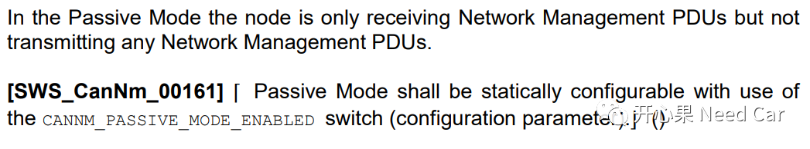
大家也意识到了，ECU的网络类型是否是Passive的，可以提前通过静态配置参数CANNM_PASSIVE_MODE_ENABLED配置，而这个需求来源于OEM，OEM的EE部门会考虑哪些ECU的网络类型是Passive类型，哪些不是。但是，有的项目开发中，ECU的网络类型要求配置为Passive，但是又要求网络状态进入Repeat Message State时，发送网络管理报文，离开Repeat Message State时停发网络管理报文，如下所示：
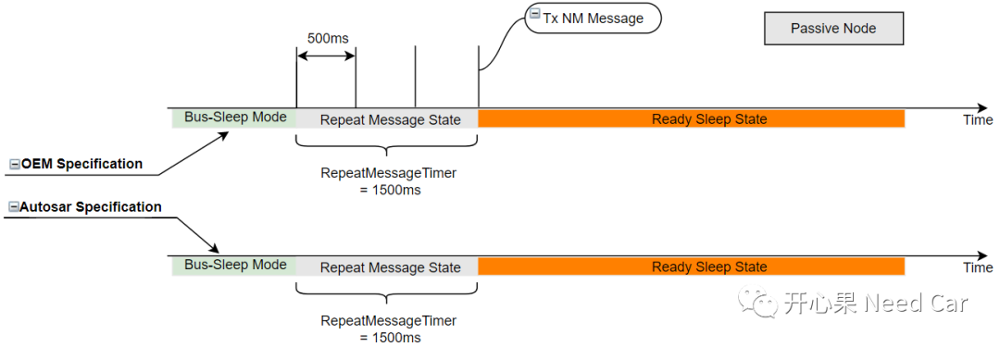
可以将这样的场景理解为OEM Specification和Autosar Specification。最终项目的实现以满足客户的需求为目的，规范是参考，项目的本意是根本，解释权归客户，开发人员需要做到的是：理解需求。
提示：Autosar规范中，CanNM状态机进入Repeat Message State时，如果网络类型是Passive的，不能外发网络管理报文，如下所示：
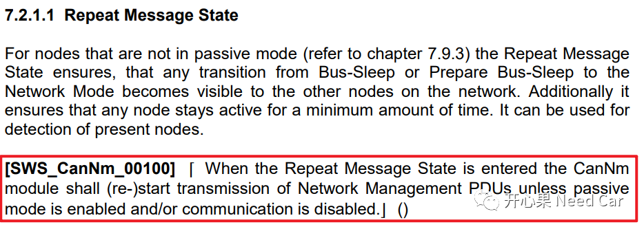
2、同一个ECU，不同Node的网络类型可以不同吗？
答：不能。Autosar给出的规范解释如下所示：
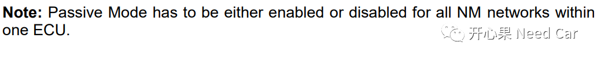
什么意思呢？举例：某个ECU有3路CAN：CAN Node1、CAN Node2、CAN Node3。要么这3路CAN Node网络类型全部是Passive，要么全部不是。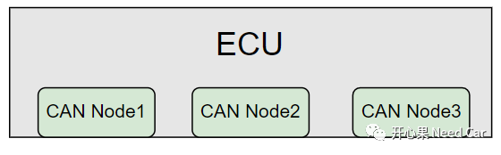
能不能做到CAN Node1不发网络管理报文，CAN Node2、CAN Node3发送网络管理报文。从软件实现的角度：可以。但是，不符合Autosar规范。3、如何理解网络状态requested/released和CanNM状态？
答：这里我说一下自己对这一部分Autosar规范的理解。如果某个Node想要主动请求网络通信，该Node需要有主动外发网络管理报文的能力，只有Node具备了外发网络管理报文的能力，才有唤醒当前网段其他节点的可能。这也意味着此Node对应ECU的网络类型不能是Passive的。
网络状态的requested/released，需要调用接口CanNm_NetworkRequest()/CanNm_NetworkRelease()进行切换。ECU被加电，CanNM完成初始化以后，CanNM处于Bus-Sleep Mode，网络状态切换成默认状态的released。如果CanNM状态机想要进入Network Mode::Repeat Message State，意味着CanNm_NetworkRequest()或者CanNm_PassiveStartup()被调用，而Node网络的状态只能由CanNm_NetworkRequest()的请求决定。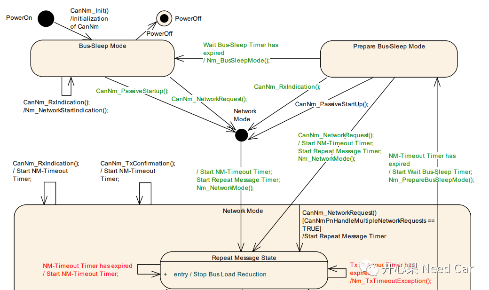
所以，CanNM状态机进入Network Mode::Repeat Message State的方式有两种：调用CanNm_PassiveStartup()或者CanNm_NetworkRequest()。而网络进入requested状态只能由CanNm_NetworkRequest()决定。如果网络类型是Passive的，不会外发网络管理报文，调用CanNm_PassiveStartup()，使得CanNM状态机进入Repeat Message State，此时可以发送应用报文，由于网络状态依然是released，所以之后进入Ready Sleep State；如果网络类型不是Passive的，通过调用CanNm_NetworkRequest()进入Repeat Message State，即可以发送网络管理报文，也可以发送应用报文，之后进入Normal Operation State。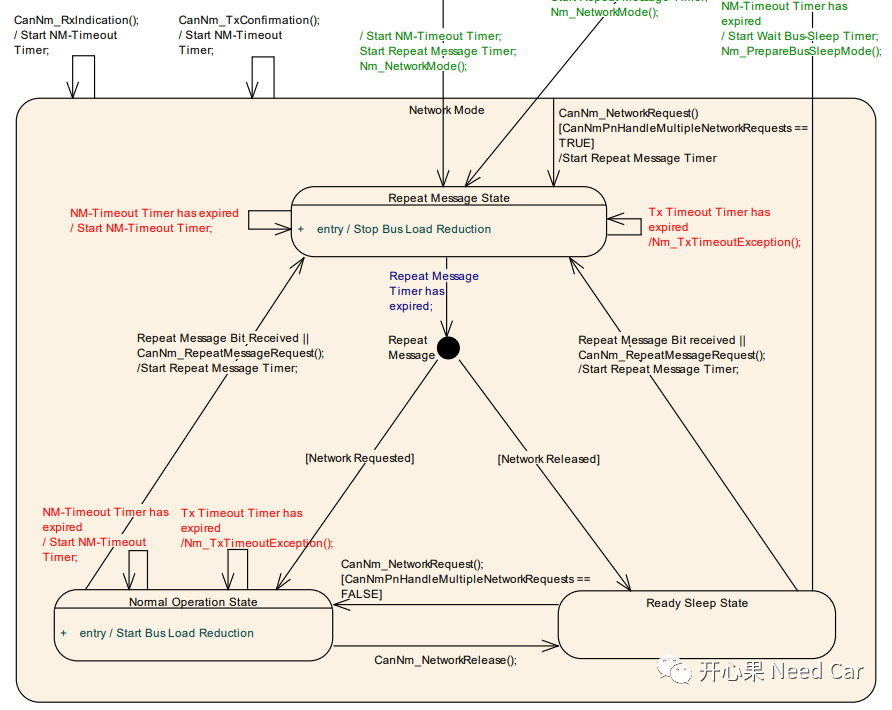
4、PN功能设计，需要网段内所有ECU都必须包含PN功能吗？
这里举一个例子：ECU1、ECU2没有PN功能，ECU3具有PN功能。ECU3收到的网络管理报文必须满足PNI Bit= 1 And PNC1 Bit = 1时唤醒。所以，ECU1、ECU2的网络管理报文内容不满足ECU3的过滤条件，比如：PNC = 0，如下所示。ECU3可以不被0x500~0x502的网络管理唤醒。所以，未必要网段内的所有ECU均实现PN功能。而ECU3发送的网络管理报文，却能唤醒ECU1和ECU2的网络。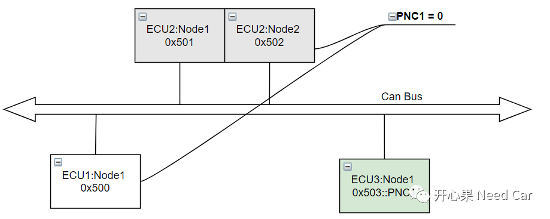
5、CanNm_PassiveStartUp()与CanNm_NetworkRequest()功能
答：通过第3点，大家应该认识到两个接口功能是不一样的，这里再细化一下：
CanNm_PassiveStartUp()：只负责CanNM状态机的切换，即：由Bus-Sleep Mode / Prepare Bus-Sleep Mode切换到Network Mode::Repeat Message State。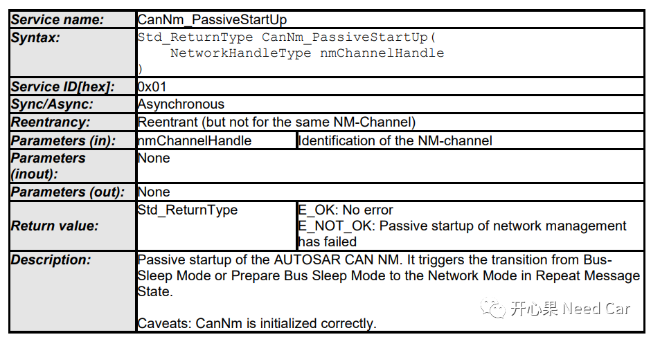
CanNm_NetworkRequest()：不仅负责CanNM状态机的切换，即：由Bus-Sleep Mode / Prepare Bus-Sleep Mode切换到Network Mode::Repeat Message State。而且负责节点网络状态的切换，即：节点的网络状态切换到requested。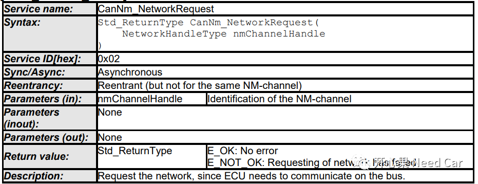
注意：接口CanNm_NetworkRequest()的调用，意味着当前ECU不能使用Passive网络类型，如下所示：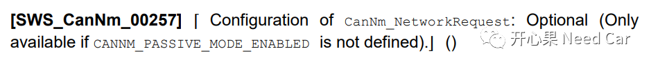
AUTOSAR_SWS_CANNetworkManagement.pdf